File: 000150.gt.txt (if the image is defective, simply delete all Arabic text and the line will be excluded)
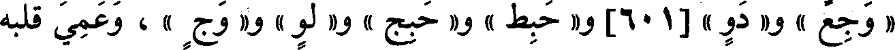
« وجع » و« دو »[601]و« حبط » و« حبج » و« لو » و« وج » ، وعمي قلبه
File: 000151.gt.txt (if the image is defective, simply delete all Arabic text and the line will be excluded)
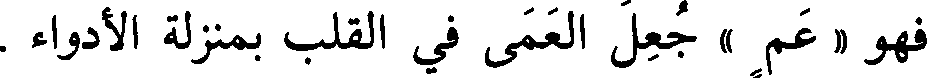
فهو « عم » جعل العمى في القلب بمنزلة الأدواء .
File: 000152.gt.txt (if the image is defective, simply delete all Arabic text and the line will be excluded)
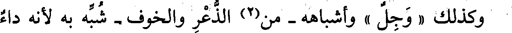
وكذلك « وجل » وأشباهه - من(2) الذعر والخوف - شبه به لأنه داء
File: 000153.gt.txt (if the image is defective, simply delete all Arabic text and the line will be excluded)
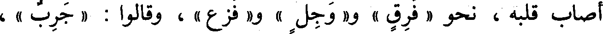
أصاب قلبه ، نحو « فرق » و« وجل » و« فزع » ، وقالوا : « جرب » ،
File: 000154.gt.txt (if the image is defective, simply delete all Arabic text and the line will be excluded)
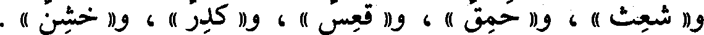
و « شعث » ، و« حمق » ، و« قعس » ، و« كدر » ، و« خشن » .
File: 000155.gt.txt (if the image is defective, simply delete all Arabic text and the line will be excluded)
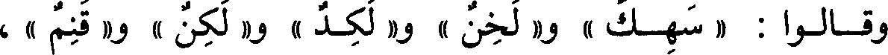
وقالوا : « سهك » و« لخن » و« لكد » و« لكن » و« قنم » ،
File: 000156.gt.txt (if the image is defective, simply delete all Arabic text and the line will be excluded)
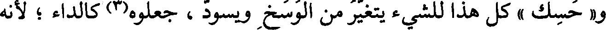
و« حسك » كل هذا للشيء يتغير من الوسخ ويسود ، جعلوه(3) كالداء ؛ لأنه
File: 000157.gt.txt (if the image is defective, simply delete all Arabic text and the line will be excluded)
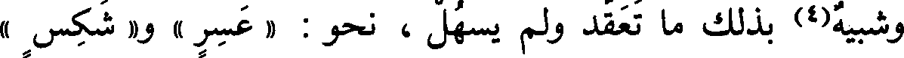
وشبيه(4) بذلك ما تعقد ولم يسهل ، نحو : « عسر » و« شكس »
File: 000158.gt.txt (if the image is defective, simply delete all Arabic text and the line will be excluded)
عيب .
File: 000159.gt.txt (if the image is defective, simply delete all Arabic text and the line will be excluded)
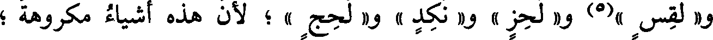
و« لقس »(5) و« لحز » و« نكد » و« لحج » ؛ لأن هذه أشياء مكروهة ؛
File: 000160.gt.txt (if the image is defective, simply delete all Arabic text and the line will be excluded)
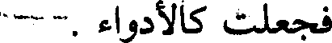
فجعلت كالأدواء .
File: 000161.gt.txt (if the image is defective, simply delete all Arabic text and the line will be excluded)
وقد يدخل(6) « فعيل » على « فعل » في بعض هذا الباب ، قالوا :
File: 000162.gt.txt (if the image is defective, simply delete all Arabic text and the line will be excluded)
الكسائي(1) : يقال « غلام يفعة ، وغلمان يفعة » الجميع(2) مثل
File: 000163.gt.txt (if the image is defective, simply delete all Arabic text and the line will be excluded)
الواحد .
File: 000164.gt.txt (if the image is defective, simply delete all Arabic text and the line will be excluded)
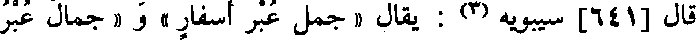
قال [641] سيبويه(3) : يقال « جمل عبر أسفار » و« جمال عبر
File: 000165.gt.txt (if the image is defective, simply delete all Arabic text and the line will be excluded)
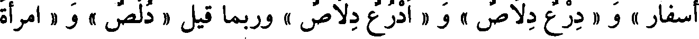
أسفار » و« درع دلاص » و« أدرع دلاص » وربما قيل « دلص » و« امرأة
File: 000166.gt.txt (if the image is defective, simply delete all Arabic text and the line will be excluded)
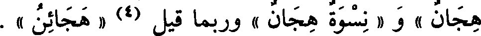
File: 000167.gt.txt (if the image is defective, simply delete all Arabic text and the line will be excluded)
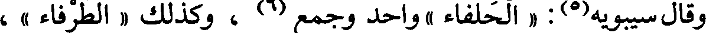
وقال سيبويه(5) : « الحلفاء » واحد وجمع(6) ، وكذلك « الطرفاء » ،
File: 000168.gt.txt (if the image is defective, simply delete all Arabic text and the line will be excluded)
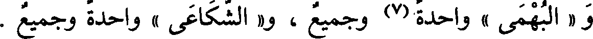
و « البهمى » واحدة(7) وجميع ، و« الشكاعى » واحدة وجميع .
File: 000169.gt.txt (if the image is defective, simply delete all Arabic text and the line will be excluded)
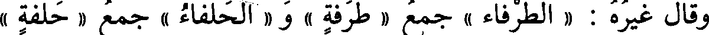
وقال غيره : « الطرفاء » جمع « طرفة » و« الحلفاء » جمع « حلفة »
File: 000170.gt.txt (if the image is defective, simply delete all Arabic text and the line will be excluded)
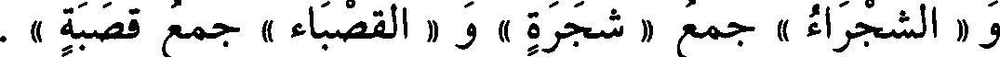
و « الشجراء » جمع « شجرة » و« القصباء » جمع قصبة » .
File: 000171.gt.txt (if the image is defective, simply delete all Arabic text and the line will be excluded)
قال الفراء مثل ذلك ، إلا في « الحلفاء » فإنه قال : لم أسمع
File: 000172.gt.txt (if the image is defective, simply delete all Arabic text and the line will be excluded)
الواحدة(8) منها إلا « حلفاءة » وتصغر « حليفية »(9) .
File: 000173.gt.txt (if the image is defective, simply delete all Arabic text and the line will be excluded)
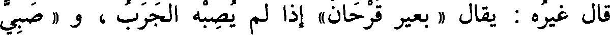
قال غيره : يقال « بعير قرحان» إذا لم يصبه الجرب ، و « صبي
File: 000174.gt.txt (if the image is defective, simply delete all Arabic text and the line will be excluded)
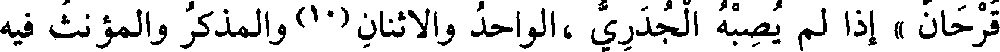
قرحان » إذا لم يصبه الجدري ،الواحد والاثنان(10)والمذكر والمؤنث فيه
File: 000175.gt.txt (if the image is defective, simply delete all Arabic text and the line will be excluded)
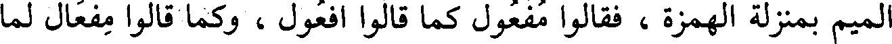
الميم بمنزلة الهمزة ، فقالوا مفعول كما قالوا أفعول ، وكما قالوا مفعال لما
File: 000176.gt.txt (if the image is defective, simply delete all Arabic text and the line will be excluded)
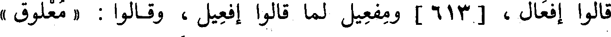
قالوا إفعال ، [613] ومفعيل لما قالوا إفعيل ، وقالوا : « معلوق »
File: 000177.gt.txt (if the image is defective, simply delete all Arabic text and the line will be excluded)
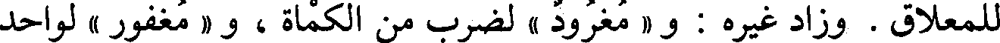
للمعلاق . وزاد غيره : و« مغرود » لضرب من الكمأة ، و« مغفور » لواحد
File: 000178.gt.txt (if the image is defective, simply delete all Arabic text and the line will be excluded)
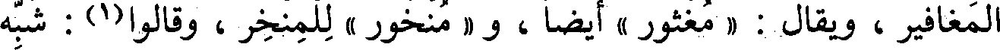
المغافير ، ويقال : « مغثور » أيضا ، و « منخور » للمنخر ، وقالوا(1) : شبه
File: 000179.gt.txt (if the image is defective, simply delete all Arabic text and the line will be excluded)
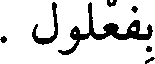
بفعلول .
To Save: `Ctrl+s`, make sure to choose `Webpage, complete`!